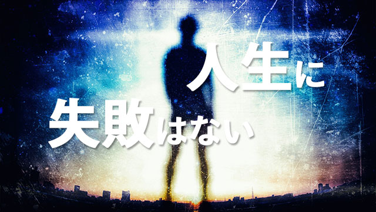

イヤァ長い！
何がって？
我が子の高校受験です。なかなか終わってくれない（涙）
既に私立は3校うけて2勝1敗。
今日は県立入試の第一日目。明日は作文の試験と続きます。
先ほどソファに寝転んで犬と戯れている息子に「今日はどうだった？」と聞くと「う～ん、イマイチ……」という力ない返事……。
何かドッと疲れが出ますね。親のほうが……（汗）
ここまで書いていて気になったのでリビングをのぞくと、毛布をかぶった息子が“死体”のように床にうつぶせで横たわっています。「おい、明日の作文は気合入れろよ」
そう呼びかけると「ウ、ウーン」と毛布越しにくぐもった声で返事。
大丈夫か!? こんなんで……
マァ今更「気合いを入れろ」というのもマヌケな話ですが親としては他に言い様がないのも事実。
息子も今日一日で5教科も受けて疲れているのでしょう。ただ、もし県立の前期がダメなら後期入試も受ける（かもしれない）ことになり、そうすると私立と合わせて5回受験することになってしまいます。
そうなると3月まで入試がズレ込むことになる。これはやっぱり長い！
私だけでなく、受験生の子を持つ多くの親の皆さんも同じ心境ではないかと推察します。
特に首都圏では高校入試といえども一人平均4～5校も受けるのが普通です。これだけ受ければどうしても1,2校は不合格になることも珍しくありません。
不吉な話をするなと叱られるかもしれませんが、私も長く受験指導をしてきて受験校すべてに合格する子の方が少ないという現実をお伝えしなければなりません。
そこで今回は、我が子が不合格になった場合の親の在り方についてお話ししたいと思います。
慰めより現実を受け入れること
実際私にも覚えがありますが、受験不合格というのは嫌なものです。
不合格というレッテルは何か自分の存在そのものを否定されたような衝撃を受けるものだからです。
特に人生経験の乏しい子どもたちにとって、この拒絶の体験は人生の厳しさ、思い通りにいかない現実の壁を初めて痛感するものでしょう。
なんだかんだ言ってそれまでは親や先生に守られていた、失敗しても許されてきたという状況に甘んじていたのです。
それが力及ばず不合格という厳しい現実を突きつけられることで自分の甘さに気がつくかもしれません。
だから、ある意味で「不合格」はひとつのチャンスとも言えると思います。
子どもが自分に気づくチャンスであり、現実と向き合いそれを受け入れることを学ぶチャンスだということです。
ここで親の取るべき態度は、一緒になって嘆き悲しむことでも「だからもっと早くとりかかれと言ったのに」などと子どもをののしることでもありません。
ときどきそのような親を見かけますが、慎むべきです。
かといって安易に慰めるのもダメです。
「競争率も高かったし仕方ないよね」とか
「次（大学入試）」はガンバろう」あるいは
「人生に多少の失敗はつきものだから……」
など気休めを言うのもよくありません。
これらの言葉を塾や学校の先生が言うのなら“励まし”になりますが、親が口にするのは現実逃避を促す結果になりかねません。
子どものダメージを軽減したい気持ちは分かりますが、親（家族）がそう言うのは子どもにとって場合によっては「屈辱」となります。
これらの言葉はむしろ親が自分に言い聞かせていることが多く、子どもの足しにはならないのです。
子どもは現実の厳しさを突きつけられたことによって悲しみや悔しさ、怒り、後悔の念を感じているかもしれません。
ならばその悲しみ、悔しさ、怒り、後悔の念をしっかりと感じさせることもまた子どもにとって必要なことではないでしょうか。
しっかり感じきることによって次のステップへ向かう心の準備が整うからです。
チャレンジを認め静かに振り返る
ところで長年受験生の面倒などを見ていると、受からなかった子も受かった子も得点それ自体は大差がないことが分かります。
受験者の得点は、合格最低ライン付近に集中しているからです。不合格というと本人も家族もガッカリしますが、ほんの2,3点から10点程度の差（合格点から）しかないものです。
要するに受からなかった子は、能力がなかったとか実力不足だったというより“最後のツメ”が甘かったというほうが正しいのです。
その証拠に実力的（偏差値的）に無理だろうと見られていた子でも、最後のツメをきっちりやれば不思議と合格ラインギリギリまで達するのです。
たいていの子どもたちは、ちゃんと自分の志望校のレベルに応じた学力（合格点）付近まで上がってくるということです。
私は長い講師生活を通じていつもこの「事実」に驚かされてきました。目標をある程度高く掲げることの大切さと子どもたちの柔軟な伸びる力、可能性の大きさに目をみはらされてきたのです。
だから
「もっと早くからガンバっていれば」
「しょせんあの学校はムリだったのだ」
という言葉は少し酷なのです。
たとえ不合格だとしてもチャレンジした事実こそ認められるべきです。合否はたまたまの結果に過ぎません。
まず親は、我が子が不合格であったという「結果」だけにとらわれるのでなく、果敢にチャンレンジしたというその事実を認めることです。
そして「実力不足だ」「ちゃんと勉強しないからだ」と思う代わりに、本番で合格点近くまできていたが最後のツメが甘かったという私の言葉（事実）を心に留めた上で、子どもが「現実」を受け入れるよう少しの時間を取りましょう。
子どもの心情に同化するのでなく、子どもが悔しがったり悲しんだりする時間（ゆうよ）を与えるのです。体験を味わうスペースを作る感じです。
そして入試がすべて終わった時点で一連の体験を振り返ってみましょう。
この「振り返り」は重要です。
子どもがチャレンジしたことを認めた上で「この経験から何を学んだか」それとなく促してみましょう。誘導せずに子ども自身が自分の体験を客観的に振り返ることができるよう促してみて下さい。
私は「人生に失敗はない！」と思っています。
その時はどんなに辛く悲しい出来事と見えたとしても、後々振り返ってみれば「成功」の一部分であったと気づくからです。
入試不合格は大きな視点から捉えれば決して失敗ではありません。まして人格の否定ではありません。
しかしそれを現実逃避の手段として使うのではなく、その事実をしっかり受け止め自ら教訓を引き出すことができれば、むしろ大きなチャンスであると信じます。
私も入試が終われば息子が受験から何を学んだのか一緒に振り返りたいと思います。
その「振り返り」を楽しみに、今しばらく試練の時を過ごす息子を静かに見守りたいと思っています。